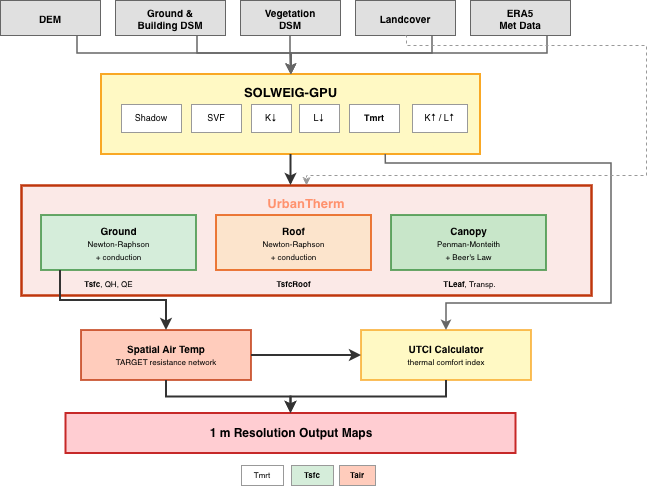
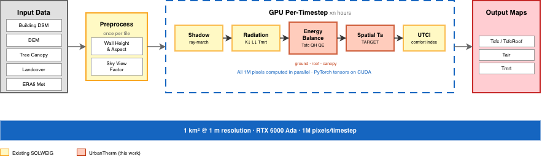

Cities are getting hotter. Urban surfaces - asphalt, concrete, rooftops - absorb solar radiation and re-emit it as heat, creating the urban heat island (UHI) effect. Understanding where and how much hotter at fine spatial resolution is critical for urban planning, public health, and climate adaptation. But existing tools either lack the physics or can't scale.
This post describes UrbanTherm, an energy balance extension to the SOLWEIG radiation model that computes physics-based surface temperatures, air temperatures, and thermal comfort at 1-meter resolution using GPU acceleration.

The Problem with Parametric Surface Temperatures
SOLWEIG (Solar and Longwave Environmental Irradiance Geometry) is a well-established model for computing Mean Radiant Temperature ($T_\mathrm{mrt}$) in urban environments. It uses digital surface models (DSMs) to compute shadow patterns, sky view factors, and shortwave/longwave radiation fluxes at each pixel.
However, standard SOLWEIG estimates ground surface temperature using a parametric sinusoidal fit:
$$T_g = T_{gK} \cdot h_\mathrm{max} \cdot \sin\!\left(\frac{t - t_\mathrm{sunrise}}{t_\mathrm{LST,max} - t_\mathrm{sunrise}} \cdot \frac{\pi}{2}\right) \cdot CI$$
where $T_{gK}$ is a fitted coefficient, $h_\mathrm{max}$ is maximum solar altitude, and $CI$ is a clearness index. This is fast but physically naive - it can't distinguish asphalt from grass, doesn't account for subsurface heat storage, and ignores evapotranspiration.
Our Approach: Full Surface Energy Balance
UrbanTherm replaces the parametric model with a full surface energy balance solved at every pixel:
$$R_\mathrm{net} = Q_H + Q_G + Q_E$$
Expanding each term:
$$(1-\alpha)K_\downarrow + \varepsilon L_\downarrow - \varepsilon\sigma T_\mathrm{sfc}^4 = h_c(T_\mathrm{sfc} - T_a) + \frac{\lambda}{d}(T_\mathrm{sfc} - T_{\mathrm{layer},1}) + \frac{\rho c_p (e_s(T_\mathrm{sfc}) - e_a)}{\gamma(r_a + r_s)}$$
where:
- $R_\mathrm{net}$ = net radiation (shortwave absorbed + longwave in − longwave out)
- $Q_H$ = sensible heat flux (surface heating the air via convection)
- $Q_G$ = ground heat flux (heat conducted into the subsurface)
- $Q_E$ = latent heat flux (evapotranspiration from pervious surfaces)
This is nonlinear - radiative emission scales as $T^4$, and latent heat depends on the exponential saturation vapor pressure curve. We solve for $T_\mathrm{sfc}$ using Newton-Raphson iteration with the Jacobian:
$$F'(T) = 4\varepsilon\sigma T^3 + h_c + \lambda/d + \frac{\rho c_p}{\gamma(r_a + r_s)} \cdot \frac{de_s}{dT}$$
Convergence is typically reached in 3-4 iterations to within 0.001 K.
Three Energy Balance Domains
UrbanTherm solves separate energy balances for three surface types:
Ground Surfaces
Each pixel is assigned a material based on a landcover grid - asphalt, concrete, grass, soil, or water - each with distinct thermal conductivity, heat capacity, albedo, emissivity, and stomatal conductance. Subsurface heat conduction is solved using a 4-layer implicit scheme (Thomas algorithm) with layer thicknesses of 0.02, 0.05, 0.10, and 0.20 m.
For pervious surfaces (grass, soil), evapotranspiration is modeled using a Jarvis-Stewart stomatal conductance model:
$$g_s = g_\mathrm{max} \cdot f_\mathrm{rad}(K_\downarrow) \cdot f_\mathrm{vpd}(\mathrm{VPD}) \cdot f_\mathrm{temp}(T_a)$$
where stress functions reduce conductance under low light, high vapor pressure deficit, and non-optimal temperatures.
Rooftops
Standard SOLWEIG treats buildings as opaque - no surface temperature at building pixels. We added a roof energy balance with multi-layer conduction through realistic roof assemblies (membrane → concrete → XPS insulation → gypsum). Green roofs get their own assembly with a soil substrate and drainage layer, plus active evapotranspiration.
Tree Canopies
A big-leaf Penman-Monteith model computes leaf temperature and transpiration for vegetated pixels. Since leaves have negligible thermal mass, $Q_G = 0$ and the balance simplifies to:
$$R_\mathrm{net} = Q_H + Q_E$$
Radiation interception uses Beer's Law ($\tau = e^{-k \cdot \mathrm{LAI}}$), and stomatal conductance uses canopy-specific Jarvis-Stewart parameters for deciduous vs. evergreen trees.
Spatial Air Temperature
Standard SOLWEIG assumes uniform air temperature across the domain. In reality, a sunlit asphalt parking lot heats the air above it more than an adjacent park. We implemented spatially varying air temperature using the TARGET resistance network model, which computes a local air temperature perturbation based on the sensible heat flux from surrounding surfaces:
- Canyon geometry (height-to-width ratio from SVF)
- Wind attenuation within street canyons
- Stability-corrected turbulent exchange
- Gaussian smoothing ($\sigma \approx 10$ m) to represent horizontal mixing
This produces realistic intra-urban air temperature variation of $\pm$0.5-1.0°C at 1-meter resolution.
GPU Acceleration with PyTorch
The entire energy balance - Newton-Raphson solver, Thomas algorithm conduction, Jarvis-Stewart conductance, TARGET air temperature - is implemented in PyTorch and runs on GPU. Every pixel is computed in parallel.

For a 1 km$^2$ domain at 1 m resolution, that's 1 million pixels per timestep, all processed simultaneously on an RTX 6000 Ada. The key design decisions:
- Fixed 5 Newton-Raphson iterations (no branching/early exit, better for GPU)
- Tensor-based Thomas algorithm solving the tridiagonal system across all pixels at once
- Material property lookup via integer index arrays - no per-pixel branching
- Conduction sub-stepping when the Fourier number exceeds 0.5 (thin roof layers at hourly timesteps)
Operator-Splitting Stability
One subtle issue: the Newton-Raphson solver and conduction solver are operator-split. For thin surface layers where the thermal coupling time constant $\tau \ll \Delta t$, the layer fully equilibrates within one timestep, causing the NR solver to overshoot. We introduced a ground heat flux coupling factor:
$$\beta = \frac{\tau}{\Delta t}\left(1 - e^{-\Delta t/\tau}\right)$$
This reduced hour-to-hour $Q_H$ oscillations on roof pixels by 69% in our Chicago test case.
Material Properties
Each surface type is characterized by thermal and radiative properties:
| Material | Albedo | Emissivity | $\lambda$ (W/m/K) | $C$ (MJ/m$^3$/K) | Evaporation |
|---|---|---|---|---|---|
| Asphalt | 0.12 | 0.95 | 0.75 | 1.9 | No |
| Concrete | 0.25 | 0.92 | 1.4 | 2.0 | No |
| Grass | 0.25 | 0.95 | 0.25 | 1.0 | Yes |
| Soil (dry) | 0.25 | 0.94 | 0.35 | 1.3 | Yes |
| Water | 0.08 | 0.98 | 0.6 | 4.18 | Free |
Roofs use a 4-layer assembly: waterproofing membrane (0.01 m), concrete slab (0.05 m), XPS insulation (0.10 m), and gypsum ceiling (0.016 m). Green roofs add a soil substrate and drainage layer with active evapotranspiration - notably, we explicitly model the drainage layer, which standard green roof energy balance models (EnergyPlus EcoRoof, WUFI) omit.
What UrbanTherm Produces
For each timestep and each 1 m pixel:
- Surface temperature ($T_\mathrm{sfc}$) - ground, roof, and canopy
- Spatially varying air temperature ($T_\mathrm{air}$)
- Mean radiant temperature ($T_\mathrm{mrt}$)
- UTCI (Universal Thermal Climate Index) - a thermal comfort metric
- Component fluxes: $Q_H$, $Q_E$, $Q_G$, $R_\mathrm{net}$
This enables questions like: How much cooler would this street be with trees? What if we replaced this parking lot with a park? How effective are green roofs at reducing surface temperatures?
References
- Lindberg et al. (2008), "SOLWEIG 1.0 - Modelling spatial variations of 3D radiant fluxes and mean radiant temperature in complex urban settings"
- Nice et al. (2018), "Development of the VTUF-3D v1.0 urban micro-climate model"
- Broadbent et al. (2019), "The Air-temperature Response to Green/blue-infrastructure (TARGET) framework"
- Mascart et al. (1995), "A modified parameterization of flux-profile relationships in the surface layer"
- Jarvis (1976), "The interpretation of the variations in leaf water potential and stomatal conductance"
- Sailor (2008), "A green roof model for building energy simulation programs"